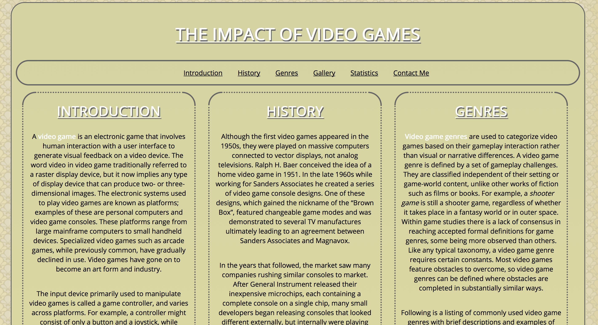
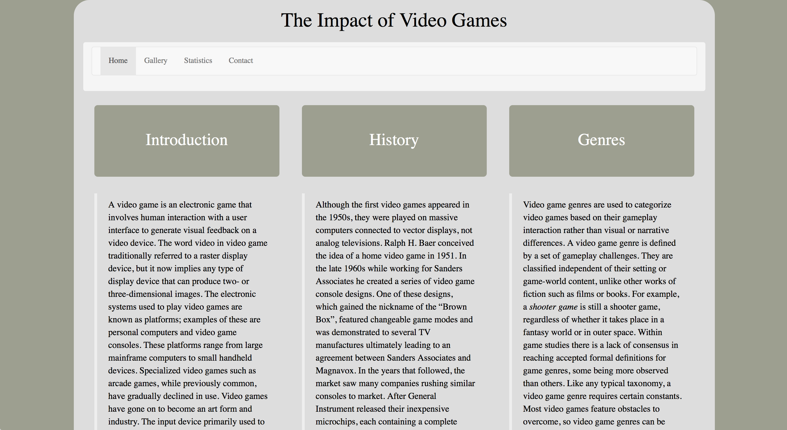
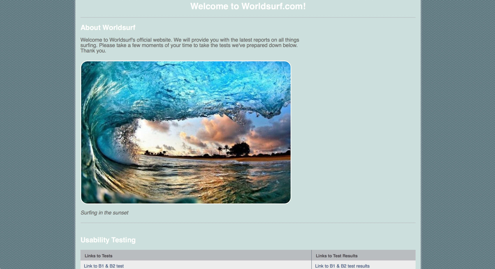
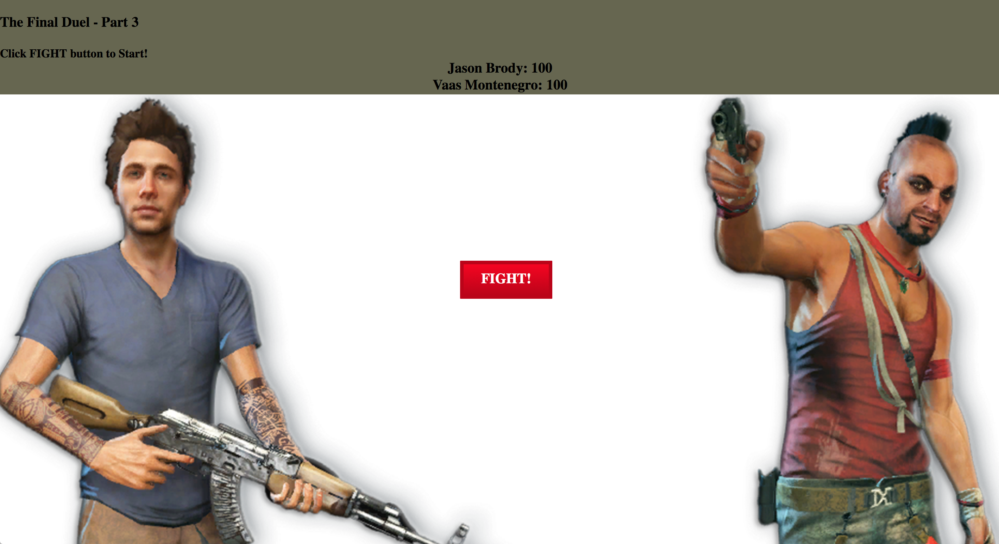
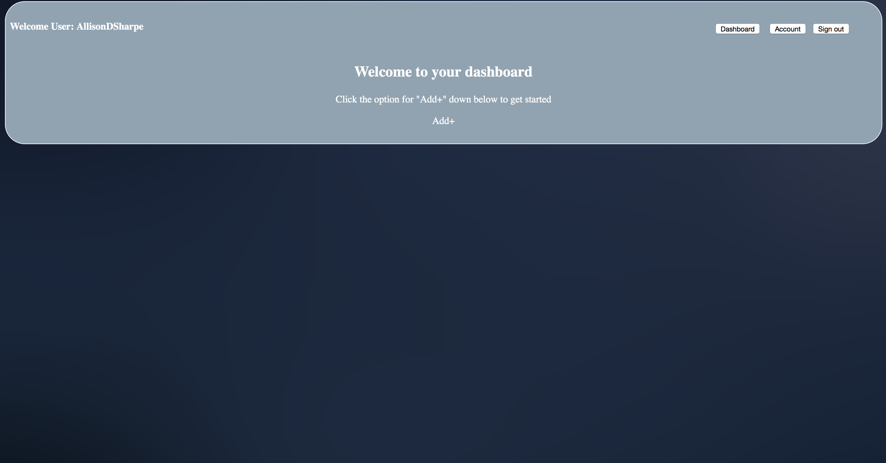
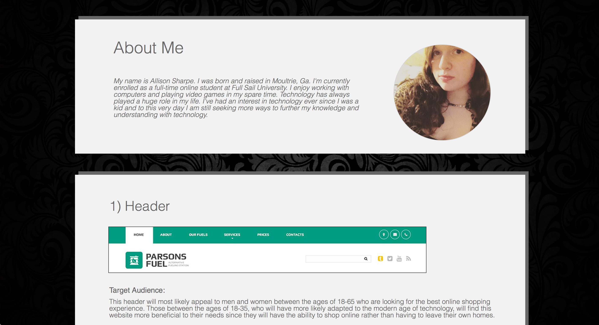
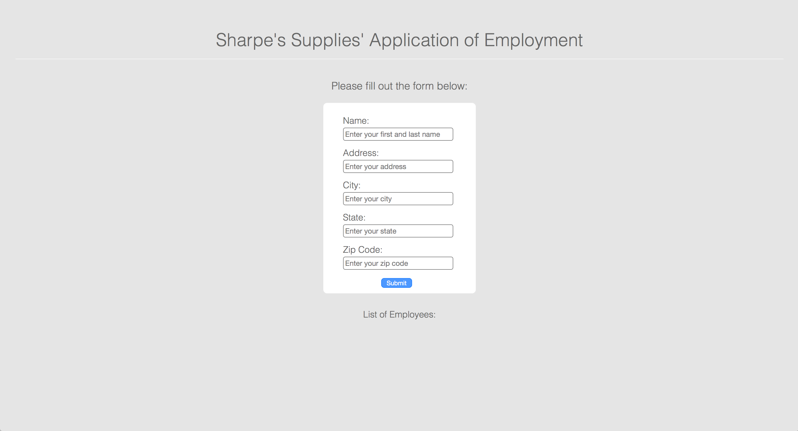
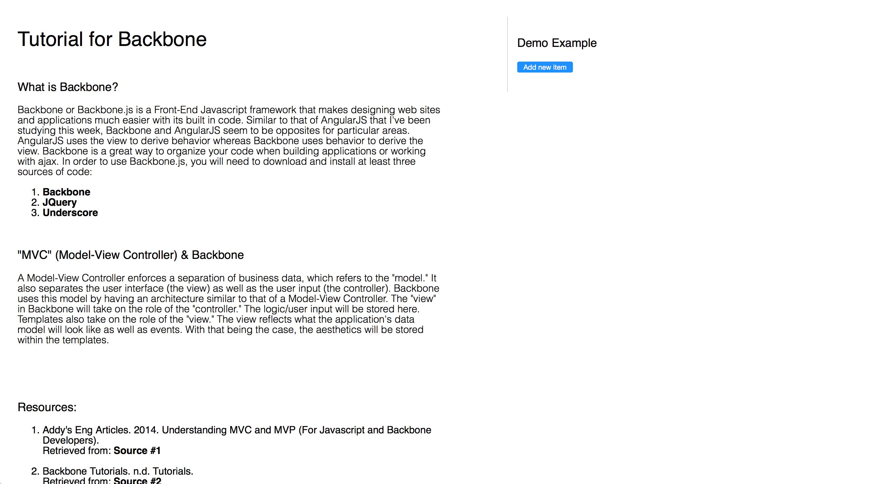
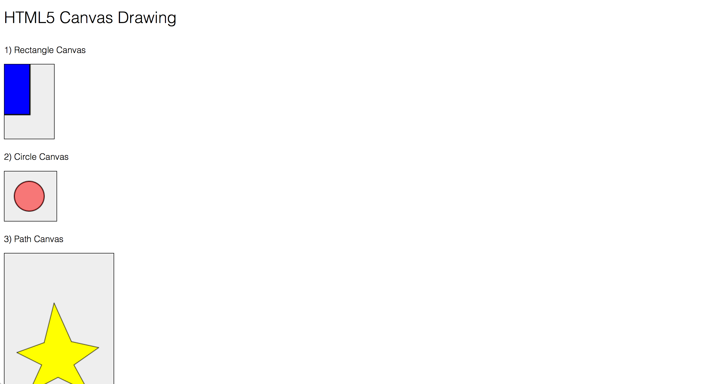
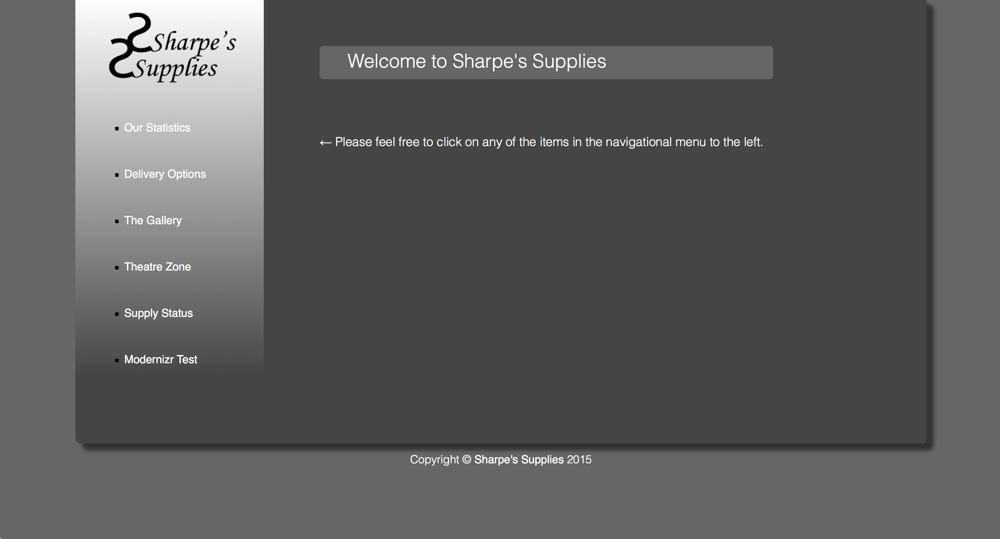

Full Sail University - WDD Projects
Designing for Web Standards I:
Implementing features such as the table and the form html tags within a webpage.
Designing for Web Standards II:
A simple website created to contain information about a subject of choice.
Web Interface & Usability:
A webpage created to contain Usability test files and their results.
Programming for Web Applications I:
A simple application created using JavaScript.
Programming for Web Applications II:
A website that contains a registration page, dashboard page, etc using JQuery.
Web Standards Project:
A webpage created to contain 10 individual features for a website.
Front-End Web Frameworks - Week Two:
A simple application that allows the user to enter an employee's information with a form and after to entering the information, a box with the user's information will appear at the bottom for the user to view.
Front-End Web Frameworks - Week Three:
A webpage created containing information for Backbone.js and a simple demo.
Web Interaction & Animation - Week One:
A webpage containing canvas examples using the canvas tag.
Web Interaction & Animation - Weeks Two, Three, & Four:
A website created to display various webpages containing JavaScript features.
